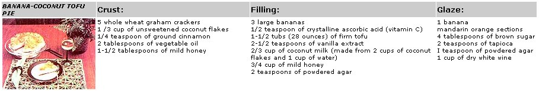
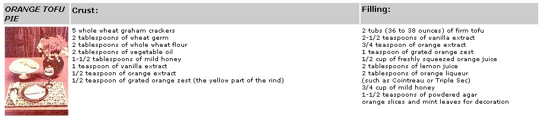
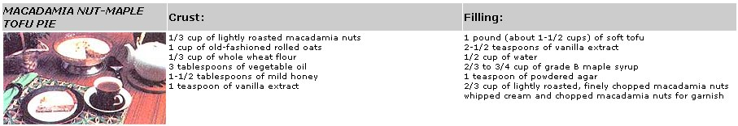

At a time when almost everyone seems to be borrowing ideas from Japan, is it possible that the people of that nation could learn something from us? You bet it is! For centuries, you see, the Japanese (and other Orientals) have prepared tofu-the inexpensive soybean food that's low in calories and saturated fats, free of cholesterol, rich in vitamins and minerals, and high in protein-in essentially the same ways. Without a doubt, many of those traditional recipes are good tasting as well as nutritious . . . but they're not the last word on tofu cuisine. In less than a decade, Americans have adapted tofu to the Western palate . . . and Occidental cooks have really pioneered the development of a number of tofu desserts. The creations include a mouth-watering array of pies, cheesecakes, puddings, cakes, cookies, delicate pastries, and even ice creams!
Tofu-which can range from a soft, pudding-like consistency to one that resembles pressed cheese-lends itself especially well to pies of all descriptions. Five of my favorites are presented here, each of which calls for a baked crumb or nut crust and an unbaked filling. I whip up the fillings in my food processor (though you could use a blender or a mixer . . . see the sidebar on blending techniques) and quickly gel them, using powdered agar, another oriental import (you'll find more information about agar in an accompanying sidebar). And as for the taste of these delectable concoctions . . . well, you'll just have to find out for yourself. Try one or two of these recipes . . . and celebrate the Western culinary imagination.
What better way is there to herald summer than with a cool, fruit-laden dessert? To make the crust for this pie, break the graham crackers into small pieces and add them to the work bowl of your food processor, along with the other dry ingredients. Process the mixture until the crackers are finely ground, then-with the machine still running-add the oil and honey. Press the mixed "dough" into a wellgreased 9-1/2" pie pan, coating first the sides and then the bottom, and bake the shell in a preheated 375°F oven for about 8 minutes, or until the edges turn slightly brown.
While the crust is baking and cooling, you can put together the pie's filling. First, cook the dried apricots in 1-1/2 cups of water until they're soft but not mushy. Take out the nine most attractive pieces to save for decorating the top of the pie. Now, continue simmering the remaining halves until all the water is taken up. Next, process the fruit until it's smooth, then blend in the tofu and vanilla extract. (If your machine has a small work bowl, you'll need to mix the tofu in two batches and then use an electric or rotary beater to combine them.) After setting the fruitladen pudding aside, pour the remaining cup of water and the honey into a small saucepan, mix them well, and then sprinkle the powdered agar over the sweet liquid. Let the gelling agent soften for a minute, bring the mixture to a rolling boil, and cook it for 30 seconds. When the time's up, remove the agar liquid from the heat and allow it to cool for 5 to 8 minutes. Then-with the food processor running-slowly pour the agar blend into the tofu-apricot pudding, and mix the ingredients for a few seconds. Let the filling set up in the refrigerator for 15 to 20 minutes, then briefly process it again until it's soft and creamy. Pour the filling into the cooled pie shell and chill the dessert until it's firm.
While the pie is setting up, rescue those set-aside apricot halves and-in a small saucepan-combine them with a few drops of almond extract and a tablespoon each of honey and water. (You may substitute 1 tablespoon of white wine, or the same measure of peach or apricot brandy, for the almond extract and water.) Garnish the pie with the glazed apricots and place a few mint leaves alongside the fruit for added color. This mouth-watering dessert tastes every bit as good as it looks!
Using the ingredients listed, prepare the crust for this pie in the manner described in the preceding recipe. Pat the crust onto a well-greased springform pan, and-as before-bake it in a preheated 375°F oven for about 8 minutes.
Next, make the coconut milk by pouring 1 cup of boiling water over 2 cups of coconut flakes. The coconut will still appear somewhat dry, but don't add more water or the resulting milk will be too thin. Let the mixture stand for 15 to 20 minutes.
To make the filling, puree the bananas and add ascorbic acid to retard their discoloration. Then, using two thicknesses of good cheesecloth, squeeze most of the moisture from the tofu cakes. After adding the tofu and vanilla to the bananas, blend the ingredients well. By this time the coconut should be sufficiently, soaked, so-using the cheesecloth again-squeeze the flakes over a measuring cup. If you fall short of the needed 2/3 cup of liquid, pour in enough water to bring it to the correct level. Now, combine the coconut milk and honey in a small saucepan and sprinkle the powdered agar on top. As before, allow the mixture to stand for a minute, then bring it to a rolling boil for 30 seconds. When the agar has cooled for 5 minutes, slowly pour it into the tofu-banana blend, processing the ingredients as you add them so that they're thoroughly mixed. Then pour the filling into the cooled crust, cover the pie with plastic wrap, and chill it for 15 minutes, or until the top is firm to the touch.
You can decorate the pie with banana slices and sections of mandarin oranges, as shown, or come up with your own design. For the glaze, combine the brown sugar, tapioca, and agar in a saucepan . . . add the wine . . . and stir the mixture until all the soluble ingredients are dissolved. Now, bring the concoction to a rolling boil for 30 seconds, stirring it constantly to prevent sticking. Let the mixture cool for a few minutes until it starts to thicken, then spoon it over the decorated pie, being careful to cover all the fruit. Chill the dessert thoroughly before you serve it.
Again, this crust is prepared in the manner used for the two preceding pies, with the changes in ingredients indicated above. Press the crust into the bottom of a well-greased 9-1/2" springform pan and bake it in a preheated 375°F oven for 10 to 12 minutes, or until it starts to brown around the edges.
While the crust cools, squeeze most of the water out of the tofu with a cheesecloth, then process the soybean curd, extracts, and zest until the resulting batter is smooth and creamy. Next, combine the orange juice, lemon juice, liqueur, and honey in a small saucepan . . . sprinkle on the agar . . . and-after allowing the gelling agent to soften for a minute-boil the mixture for 30 seconds. When the agar liquid has cooled for about 5 minutes, slowly add it to the tofu mixture and process the blend thoroughly. Then pour the filling into the cooled crust, chill the pie, and garnish it with orange slices and mint leaves.
Here's the perfect dessert for the chocolate-lovers in your clan. Begin making the crust by grinding the almonds in the food processor, pulsing the machine on and off until the nuts are chopped to a medium-fine size. Then add the remaining ingredients and process the crust-makings until they are well mixed. Press the nutmeat crust into the bottom of a well-greased 9-1/2" springform pan and bake it in a preheated 375°F oven for 8 minutes.
Now, using two thicknesses of cheesecloth, squeeze most of the moisture out of the tofu. Blend the squeezed cakes until they have a smooth, creamy consistency, then mix in the carob powder, the vanilla extract, and the almond extract.
With that done, combine the honey and water in a small saucepan . . . sprinkle on the agar . . . let the mixture stand a minute . . . and bring it to a rolling boil for 30 seconds. When the agar has cooled for 5 minutes, add it to the tofu base and blend the ingredients thoroughly. Then pour the filling into the cooled crust and chill the pie in the refrigerator until it's firm.
You can decorate your carob confection by piping a wavy border of whipped cream around the pie's perimeter and sculpting a rosette in the center, using a pastry bag fitted with a star tip. Then, with the help of a potato peeler, shave thin slivers of carob from a candy bar and sprinkle the tidbits over the rosette. This pie is sure to draw a hungry crowd . . . and it's likely to be devoured soon after the last carob shavings are in place!
Using the work bowl of your food processor, chop the nuts and rolled oats to the consistency of coarse flour by pulsing the machine on and off. After adding the flour, oil, honey, and vanilla extract, mix everything well. Pat the nutmeat crust into a 9-1/2" pie pan, and then bake the shell in a preheated 375°F oven for 10 to 13 minutes.
To make the filling, blend the tofu and vanilla extract until they're smooth. Next, mix the water and maple syrup together in a small saucepan, then sprinkle the powdered agar on top and allow the gelling agent to soften in the water for a minute. Now, bring the concoction to a rolling boil for 30 seconds. When the agar mixture has cooled for 5 minutes, add it to the tofu, processing all the while to blend the batter. Then toss in the chopped macadamia nuts, pulsing the machine on and off a few times to mix them in, and pour the filling into the cooled pie shell. Dabs of whipped cream and sprinkles of roasted, chopped nuts lend the final touches to the dessert.
EDITOR'S NOTE: If these recipes whet your appetite for more tofu cuisine, take a look at Louise Hagler's Tofu Cookery (The Book Publishing Company, $9.95). This compendium of recipes for all phases of a meal includes step-by-step directions for making tofu at home and instructions for freezing, marinating, and handling the product. And for a very thorough treatment of tofu and other soy foods, you'll want to read The Book of Tofu by William Shurtleff and Akiko Aoyagi (Autumn Press, $11.95). Excerpts from this noteworthy volume appeared in MOTHER NOS. 39-45. Both books are available from bookstores, or-for the list prices plus $1.50 for shipping and handling for 1 or 2 books, $2.00 for 3 or more-from Mother's Bookshelf (restricted) , 105 Stoney Mountain Rd., Hendersonville, NC 28791.
Although the recipes given in this article call for the use of a food processor, the pies can be made using a blender, an electric mixer, or even a rotary beater. For crumb or nut crusts, you'll probably want to chop the nuts or graham crackers separately before combining all the dry ingredients in a bowl (with the favor extracts, honey, and such) and mixing the dough with a wooden spoon.
Blenders and electric mixers generally don't handle tofu well unless some liquid is added. When using a standard home blender, mash the tofu before mixing it . . . and work with no more than half a pound at once. A good rule of thumb for the recipes given here is to blend a third of the ingredients at a time. Put the honey in first and gradually add the fruit and tofu. Then combine the separate blender batches in a bowl and add any flavor extracts. Because you'll have less liquid left to boil the agar in, you'll need to shorten the agar's cooling time to 1 to 2 minutes. Then, with the mixer running, slowly pour the agar liquid into the tofu in a steady stream and proceed as directed in the recipe. In no case should you allow the agar to set before blending it into the tofu.
Also called agar-agar or Ceylon moss, this natural seaweed extract is used in the same way as gelatin. However, agar is superior to the more common gelling agent in several respects. Agar doesn't require the usual combination of hot and cold water to set up: Instead, it hardens at 85°F, gelling foods at room temperature. And because agar will hold its form at up to 180°F, it's ideal for use in dishes stored at room temperature. For this reason, desserts made with agar are especially suited for summer potluck outings, because they won't melt before your eyes.
There are several different types of agar on the market: stick agar (or kanten), flakes, strips, and powdered agar. By far the easiest to use is the powdered form. Like the stick agar, the pulverized product is extremely reliable, and-unlike kanten-it doesn't require a soaking period before it can be used. As for the other choices, agar strips are difficult to deal with because they're hard to measure in small quantities . . . and the flakes don't always yield consistent results.
Agar is generally available at natural foods stores and co-ops.
|
carob amond tofu pie |
 |
 |
|
|
 |
|